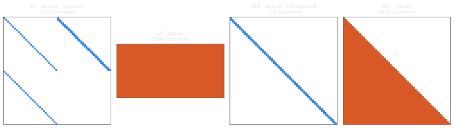
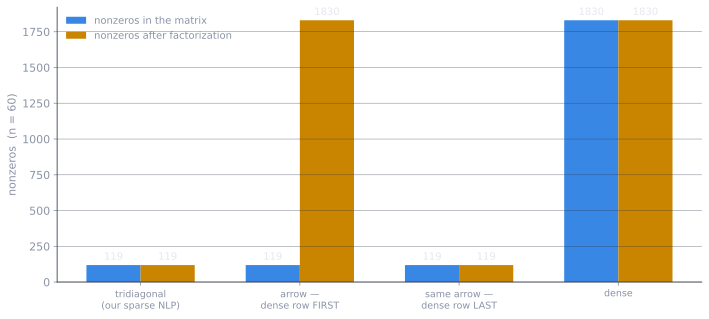
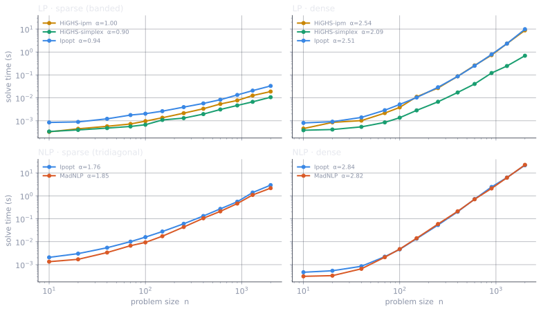
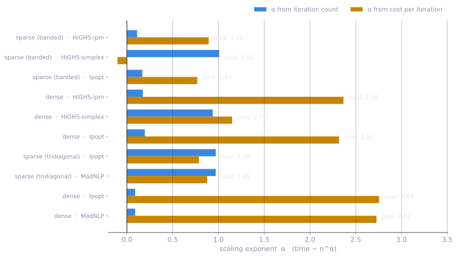
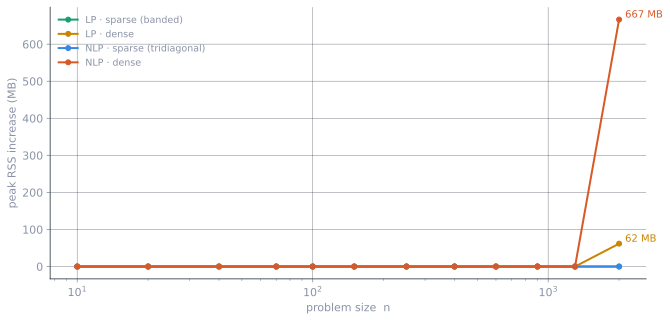
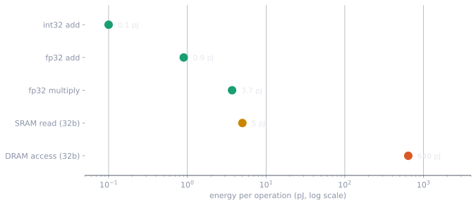
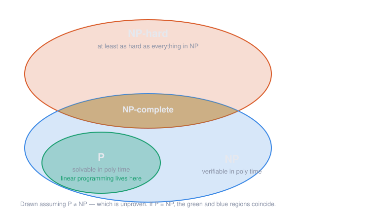
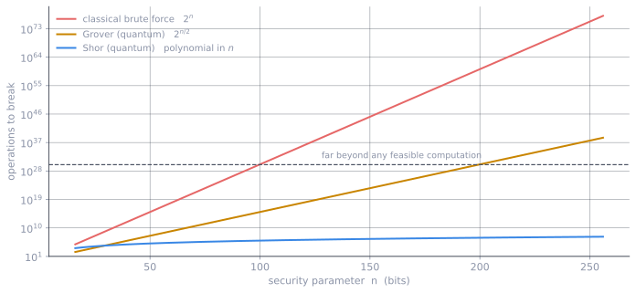
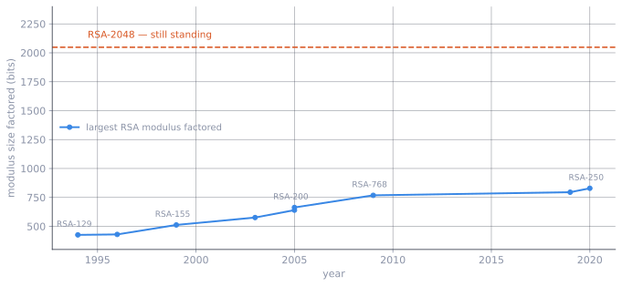

What scales, what doesn’t, and why hardness is worth protecting
2026-09-29
Scaling numbers in this deck are measured on a local benchmark harness; other figures are cited.
Given a solver and a problem family, how does cost grow with problem size \(n\)?
\[\text{cost}(n) \sim C \cdot n^{\alpha}\]
The exponent \(\alpha\) — not the constant \(C\) — decides what is tractable. Doubling your hardware buys you a better \(C\). Only a better algorithm, or a better-structured problem, buys you a smaller \(\alpha\).
Simplex (Dantzig, 1947) walks vertices of the feasible polytope. Exponential in the worst case — Klee–Minty, 1972 — and superb in practice.
Interior point cuts through the middle. Khachiyan (1979) proved LP is in P; Karmarkar (1984) made it practical.
So LP is theoretically solved and practically a choice between two methods with different failure modes.
We measured both. On banded problems they agree (\(\alpha = 0.90\) vs \(1.00\)). On dense ones they diverge (\(2.09\) vs \(2.54\)).
No vertices to walk. Instead: repeatedly build a local model, solve it, step.
Each iteration of an interior point method solves a KKT system
\[\begin{bmatrix} H & A^{\top} \\ A & 0 \end{bmatrix} \begin{bmatrix} \Delta x \\ \Delta \lambda \end{bmatrix} = - \begin{bmatrix} g \\ c \end{bmatrix}\]
where \(H\) is the Hessian of the Lagrangian and \(A\) the constraint Jacobian. (Simplified: an interior point method also adds a diagonal barrier term to \(H\).)
Everything about NLP scaling comes down to one question: how expensive is that linear solve?
A dense factorization is \(O(n^3)\). A banded one, with fixed bandwidth, is \(O(n)\).
That is not a small constant factor. It is the difference between a problem that finishes over lunch and one you cannot afford to solve at all.
So the scaling of a nonlinear program is decided less by how many variables it has than by how they are connected.
The barrier subproblem solved for a decreasing sequence of μ, on a two-variable Rosenbrock problem with one constraint. Every point on this central path is a real solution, not a drawn curve — and the endpoint matches Ipopt’s answer.

The actual matrices our solvers factorized, extracted from the same models the benchmark ran. \(n = 60\) in every panel — identical size, 15× difference in nonzeros. The two NLP Hessians are symmetric, so only their lower triangle is stored — and shown.
This is why the banded and dense families in our benchmark diverge so sharply at equal \(n\) — ~64× apart on the LP at \(n = 2000\).
Sparsity is not a property of the solver. It is a property of the model — of how you chose to write the problem down.

Factorization creates nonzeros that were not there before. The middle two bars are the same matrix — only the elimination order differs.
An arrow matrix has 119 nonzeros either way.
Eliminate the dense row first and it fills in completely — 1830 nonzeros, as many as a fully dense matrix.
Eliminate it last and there is no fill at all.
Same problem. Same sparsity. Same solver.
15× more nonzeros to compute and store — and the arithmetic gap is larger still — decided entirely by the order you eliminate variables in.
This is why sparse linear algebra libraries spend real effort on ordering heuristics (AMD, METIS) before they factor anything — and why a solver that looks slow may simply be ordering badly.
Fill computed by real symbolic elimination, the same method as the previous chart — on a 12×12 arrow matrix so every cell is visible, which is why the counts here are 78 and 23 rather than 1830 and 119.
Four problem families, chosen as a 2×2 so class and structure can be separated:
| sparse | dense | |
|---|---|---|
| LP | production planning (banded) | random dense LP |
| NLP | extended Rosenbrock (tridiagonal) | fully coupled objective |
12 sizes, from \(n = 10\) to \(n = 2000\).
Solvers: HiGHS simplex, HiGHS interior point and Ipopt on the LPs; Ipopt and MadNLP on the NLPs.
Every one of the 120 solves reached a verified optimal status.
One command runs the whole sweep and writes a single table of results. Every chart and number in this talk is generated from that table.
Throw away the first run. Julia compiles code the first time it runs it. In one check, the first solve of a small problem took more than 100× longer than the second — that was the compiler, not the solver. So every solver–problem pair gets one untimed warm-up solve first.
Keep the best of three. Background activity on a laptop only ever adds time, so the fastest of three runs is the cleanest estimate.
Fit only the tail. Below \(n = 100\), fixed per-solve overhead flattens the curve, so exponents are fitted on \(n \geq 100\).
Limits, stated plainly: one laptop, one sweep. Repeating the sweep moved some timings by up to about 20% — which is why no measured number on these slides is typed by hand.

Measured on this machine. All four panels share the same axes, so heights compare directly — the difference between them is structure, not size. Fits taken over \(n \geq 100\).
Same class, same size — only the structure differs:
| at \(n=2000\) | banded | dense | ratio |
|---|---|---|---|
| LP (HiGHS simplex) | 11 ms | 687 ms | ~64× |
| NLP (Ipopt) | 2.9 s | 21.5 s | ~7× |
Sparsity is not an optimization detail. It is the difference between a problem you can solve and one you cannot.
On the dense LP, simplex and interior point are indistinguishable at small \(n\) — and an order of magnitude apart by \(n=2000\).
\[\alpha_{\text{simplex}} = 2.09 \qquad \alpha_{\text{IPM}} = 2.54\]
Asymptotics are not academic. They decide which solver you should have picked.
Yet on the banded LP both are near-linear (\(\alpha = 0.90\) and \(1.00\)), and the choice barely matters.
How far apart they end up depends on structure — so “which solver is faster?” has no answer without “on what?”

On a log-log fit the exponents add: \(\alpha_{\text{total}} = \alpha_{\text{iters}} + \alpha_{\text{per-iter}}\). A slightly negative per-iteration exponent is noise around zero, not a solver getting faster with size.
Interior point — iteration count barely moves with \(n\) (\(\alpha_{\text{iters}} = 0.17\)). Each iteration gets expensive: a linear solve on a growing KKT system.
Simplex — each iteration stays cheap, but you need linearly more of them (\(\alpha_{\text{iters}} = 0.94\)).
The sparse NLP’s \(\alpha = 1.76\) is not a dense factorization hiding somewhere — it is \(0.97\) from iteration growth times \(0.79\) from per-iteration cost. The tridiagonal structure is delivering near-linear linear algebra.

Peak resident-set increase, Ipopt, all four families. The banded families stay flat near zero while dense NLP reaches ~667 MB. Caveat: this is process peak RSS. Julia-side allocation counters miss memory allocated inside Ipopt’s C++ internals, so RSS is the honest signal here — and it is noisy at small \(n\).

Cited, not measured — Horowitz, “Computing’s Energy Problem (and what we can do about it)”, ISSCC 2014, 45 nm process.
A DRAM access costs ~700× a floating-point add.
So the sparse-vs-dense gap is not only about operation counts — a dense factorization touches vastly more memory, and memory traffic is where the energy goes.
We did not measure energy. But these costs imply that cutting memory traffic — which is exactly what sparsity does — matters at least as much as cutting arithmetic.

P — solvable in polynomial time.
NP — a proposed solution can be verified in polynomial time. NP stands for nondeterministic polynomial, not “non-polynomial.”
NP-hard — at least as hard as everything in NP. Need not be in NP itself, and need not even be a decision problem.
NP-complete — in NP and NP-hard. The hardest problems that are still verifiable.
Whether \(P = NP\) is open. Everything below assumes \(P \neq NP\), which is believed but unproven.
| Problem | Class | |
|---|---|---|
| Linear programming | P | Khachiyan 1979 (ellipsoid) |
| Convex optimization | P-ish | poly-time to \(\varepsilon\) accuracy, under mild conditions |
| Integer linear programming | NP-hard | |
| Nonconvex quadratic programming | NP-hard | Pardalos & Vavasis 1991 |
LP being in P fits what we measured: every runtime grew polynomially, from \(\alpha \approx 1\) on banded problems to \(\approx 2.5\) on dense ones. The wall is not size — it is integrality and nonconvexity.
Simplex is exponential in the worst case (Klee–Minty, 1972) — yet it beat interior point on our dense LP at every size we measured.
Complexity classes describe the worst input, not the input you have. Hold onto this — it is about to matter a great deal.
Everywhere else in this talk, hardness is the enemy.
Cryptography is the field that needs problems to be hard. Its security rests on the claim that an attacker cannot efficiently solve something:
RSA → factoring large integers
Diffie–Hellman, ECC → discrete logarithm
Two things are commonly said, and both are wrong:
“RSA is secure because factoring is NP-complete.”
Factoring is not known to be NP-complete — and is widely believed not to be. It sits in NP ∩ co-NP; if it were NP-complete, the polynomial hierarchy would collapse.
“Crypto is safe because P ≠ NP.”
NP-hardness is a statement about the worst case. Security needs problems that are hard on random instances — average-case hardness.
A problem can be NP-hard and still easy almost always. That is useless for cryptography, which hands the attacker a randomly generated key.
This gap is why lattice problems matter: Ajtai (1996) gave a worst-case to average-case reduction — breaking random instances would imply breaking the worst case of an (approximate) lattice problem.
That line of work — Ajtai for SIS, Regev (2005) for LWE — is the theoretical backbone of today’s lattice-based standards. We return to it shortly.
Not \(P \neq NP\), but a stronger assumption: that one-way functions exist — easy to compute, hard to invert on average.
If one-way functions exist, then \(P \neq NP\). The converse is not known.
So modern cryptography rests on an assumption nobody has proved, about problems that were never NP-complete to begin with. It has held up remarkably well — but “hard” here is an empirical claim, not a theorem.

Asymptotic cost of attacking an \(n\)-bit problem — analytic curves, not measurements. Grover bends the line. Shor leaves it entirely.
Factoring and discrete logarithm in polynomial time on a quantum computer.
The best known classical algorithms are sub-exponential; Shor is polynomial. That is an exponential speedup over anything we know classically — and it lands exactly on the two problems public-key cryptography chose to stand on.
RSA — factoring → broken
Diffie–Hellman, ECC — discrete log → broken
Unstructured search in \(O(\sqrt{N})\) — a quadratic speedup, and provably optimal for unstructured search.
Quadratic sounds dramatic. It is not, against exponentials: it halves the exponent, so \(2^{128}\) becomes \(2^{64}\) of quantum work.
The fix is embarrassingly simple — double the key. AES-256 restores the margin. Grover also parallelizes poorly, so the practical advantage is smaller still.
| Primitive | Rests on | Quantum impact |
|---|---|---|
| RSA-2048 | factoring | broken — Shor |
| ECDH / ECDSA P-256 | discrete log | broken — Shor |
| AES-128 | brute-force search | weakened — AES-256 recommended |
| SHA-256 | preimage resistance | weakened, still considered secure |
| ML-KEM, ML-DSA | lattice problems | believed safe |
Symmetric cryptography survives with larger parameters. Today’s public-key cryptography — RSA and elliptic curves — does not survive at all. It must be replaced.
The problems Shor breaks were never NP-complete — that was the point of the last section. Factoring has structure, and Shor exploits exactly that structure.
BQP — what quantum computers solve efficiently — is not believed to contain NP-complete problems.
Against a genuinely unstructured NP-complete problem, the best known quantum tool is Grover: still exponential, just with half the exponent.
A quantum computer is not a machine that makes hard problems easy. It is a machine that exploits particular algebraic structure — and most hard problems do not have it.
Most of the new post-quantum standards are built on lattice problems — and here the thread of this talk closes:
Shortest Vector Problem. Given a lattice basis, find the shortest nonzero vector.
\[\min_{z \in \mathbb{Z}^n \setminus \{0\}} \; \lVert Bz \rVert\]
That is an optimization problem — and precisely the kind this talk has been about: integer-constrained and nonconvex.
Exact SVP is NP-hard (under randomized reductions). But note the lesson from before: the schemes rely on approximate versions, which are not known to be NP-hard.
The security argument for lattices is not “this problem is NP-hard” — we already saw that worst-case hardness is the wrong currency.
It is a worst-case to average-case reduction — Ajtai (1996) for SIS, Regev (2005) for LWE: solving random instances would let you solve the hardest instances of an approximate lattice problem.
Factoring has no such reduction — its security rests on nobody having found a fast algorithm. Lattice schemes come with an actual theorem relating the two regimes. One honest caveat: the theorem is asymptotic, so the key sizes actually deployed are still chosen by cryptanalysis, not by the reduction alone.
NIST published the first post-quantum standards in August 2024:
| Standard | Scheme | Type | Basis |
|---|---|---|---|
| FIPS 203 | ML-KEM (Kyber) | key encapsulation | module lattices |
| FIPS 204 | ML-DSA (Dilithium) | signatures | module lattices |
| FIPS 205 | SLH-DSA (SPHINCS+) | signatures | hash functions |
SLH-DSA rests only on hash security — deliberately, as a hedge in case lattices turn out to be weaker than believed. HQC (code-based) was added in 2025 as a backup KEM on different mathematics again.
Harvest now, decrypt later. An adversary can record encrypted traffic today and decrypt it once a quantum computer exists. Anything that must stay secret for a decade is already at risk, if such a machine arrives within that decade.
NIST’s draft transition plan (IR 8547) deprecates 112-bit-security public-key algorithms such as RSA-2048 after 2030, and disallows all quantum-vulnerable ones after 2035. The migration is not waiting for the hardware — it is happening now.
In August 1977, Scientific American published a 129-digit number and a $100 prize for factoring it.
Rivest’s estimate, using the best method and hardware then known: 40 quadrillion years.
It fell in 1994 — seventeen years later — to roughly 600 volunteers running the quadratic sieve for eight months.

Published records from the RSA Factoring Challenge and its successors. Historical data, not measured here.
Hardware got faster — but that explains only a small part of it. The algorithms moved too.
| Method | Cost |
|---|---|
| Trial division | exponential, \(O(\sqrt{N})\) |
| Quadratic sieve (1981) | \(L_N[1/2]\) |
| Number field sieve (~1990) | \(L_N[1/3]\) |
\[L_N[\gamma] = \exp\!\left((c + o(1))(\ln N)^{\gamma}(\ln\ln N)^{1-\gamma}\right)\]
The exponent moved from \(1/2\) to \(1/3\). That is the same \(\alpha\) story from the opening of this talk — except here a smaller exponent is someone breaking your cryptography.
Sub-exponential is not polynomial. RSA-2048 remains far out of reach classically, and the trend line does not threaten it soon.
But the 40-quadrillion-year estimate was wrong by more than fifteen orders of magnitude — and faster, more numerous machines explain only a small part of that. Most of the gap was mathematics.
Security margins erode from algorithmic progress at least as much as from Moore’s law. That is precisely why Shor’s algorithm is taken so seriously.
Assign crews to every flight in a schedule. Respect duty limits, rest rules, and get each crew home to base.
A major carrier faces billions of legal crew pairings.
Crew cost is second only to fuel — so a few percent is tens of millions of dollars a year.
The problem is a set partitioning problem:
\[\min_x \; c^{\top}x \quad \text{s.t.} \quad Ax = \mathbf{1}, \; x \in \{0,1\}^n\]
one column per feasible pairing, one row per flight.
Set partitioning is NP-complete. The number of columns is astronomical — you cannot even write the matrix down, let alone solve it.
By the logic of the last section, this is exactly the kind of problem we should expect to be intractable.
It is solved routinely anyway, by refusing to enumerate:
Column generation. Start with a few columns. Solve the LP relaxation. Use the duals to ask “is there a pairing that would improve this?” — a constrained shortest-path problem. Add only that column. Repeat.
Branch-and-price does this at every node of the branch-and-bound tree.
Two pieces of structure make it work:
Barnhart, Johnson, Nemhauser, Savelsbergh & Vance, Branch-and-Price, Operations Research, 1998. American Airlines reported savings around $20M/year from crew-pairing optimization — Anbil et al., Interfaces, 1991.
Factoring — a problem we want to be hard, which got easier than anyone predicted, through better mathematics.
Crew scheduling — a problem that is provably hard, solved routinely anyway, through better mathematics.
In both cases the complexity class was not the answer. Structure was.
NP-hard is a statement about the worst input in an infinite family. It is not a prediction about the instance on your desk.
Hold the solver, change the structure. Banded LP against dense LP, same size. Watch the ratio — that is the entire argument of this talk in one number.
Hold the structure, change the solver. Simplex against interior point on the dense LP. Simplex wins at every size we measured, and the gap keeps widening — \(\alpha\) 2.09 against 2.54. A crossover is what you look for; here there isn’t one, and that is a result too.
Push past the shaded line. Everything to the right of it is extrapolation — the curve, not a measurement.
That region is where scaling arguments are usually made, and where they are least trustworthy.
Individual insight. Dantzig’s simplex (1947). Strassen’s \(O(n^{2.81})\) multiplication (1969). Karmarkar (1984). Shor (1994).
One person, one idea, and an exponent moves.
Structure exploitation. Sparse factorization, fill-reducing orderings (AMD, METIS), column generation.
Not better asymptotics in general — better exploitation of the instances that actually occur.
Automated selection. Algorithm portfolios and configuration — SATzilla won medals at the 2007 and 2009 SAT Competitions by choosing among existing solvers rather than being a new one.
Machine-discovered algorithms. AlphaTensor (2022) found a way to multiply 4×4 matrices in mod-2 arithmetic with 47 multiplications, beating Strassen’s 49; AlphaDev (2023) found sorting routines now shipping in LLVM’s libc++.
Note what changed: the third era searches the space of algorithms rather than reasoning about it.
| Observation | Measured |
|---|---|
| Same class, same \(n\), sparse vs dense LP | ~64× apart |
| Same matrix, two elimination orderings | 15× more nonzeros in the factor |
| Simplex vs interior point, dense LP | \(\alpha =\) 2.09 vs 2.54 |
| Interior point iteration count | \(\alpha =\) 0.17 — nearly flat |
Not one of these numbers is derivable from the problem’s complexity class.
Complexity classes told us what kind of problem we had. They told us almost nothing about what it would cost.
LP is in P — and our dense LP still took ~64× longer than the banded one at the same size. Set partitioning is NP-complete — and airlines solve it routinely.
The worst case classified the problem. Structure predicted the bill.
1. Measure the exponent; do not assume it. \(\alpha\) is an empirical fact about your instances. We fitted 1.76 where the structure alone suggested nearer 1.
2. Treat modeling as algorithm design. Sparsity is not handed to you by the solver — it is a consequence of how the model was written. The modeler is already making algorithmic choices.
3. Let search propose; keep proof to dispose. Learned branching inside branch-and-bound still returns a provably optimal answer. AlphaTensor’s discoveries are checkable. That division is the one worth keeping.
4. Say which claim you are making. Worst case, average case, and measured case are three different statements. Much confusion in this field comes from conflating them.
If learned heuristics win on benchmarks, why keep the proofs?
Because a heuristic tuned to a distribution fails silently off it — and you will not know until it matters.
Cryptography shows the value of keeping them. Lattice schemes carry worst-case to average-case reductions — theorems, not benchmarks — and that is part of why the field trusted lattices as factoring’s replacement once quantum attacks made a replacement necessary.
The field already knows how to hold this line. It just does not hold it everywhere.
Hardness is not one thing. It is a worst-case classification you can prove (relative to \(P \neq NP\)), an average-case guarantee you sometimes can, and a runtime you can only measure.
Progress has come from the gaps between them — and that is where the next algorithms will come from too.
Structure is the variable we actually control. Not the complexity class, and not the hardware.
Questions